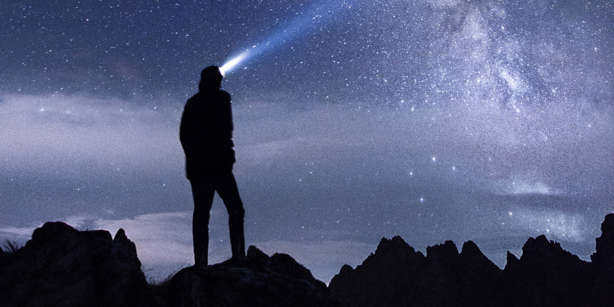
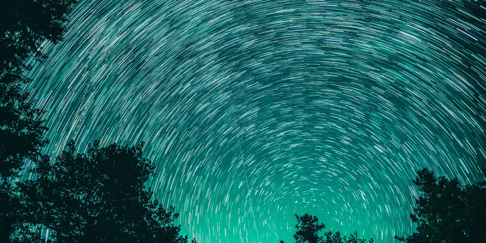
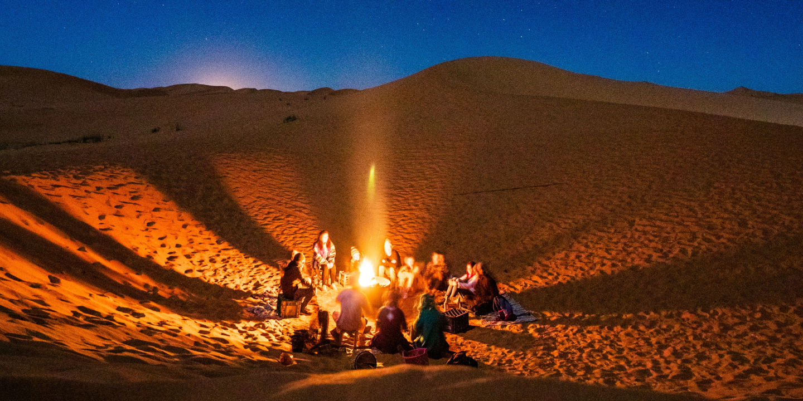

1 / 4
夜探星空
五至六月是木星最有名的鑽石雨季
下過雨後的晚上是欣賞鑽石星空的最佳時機
於星空廣場觀賞的同時也有酒吧與當地歌手駐唱
適合小酌一杯與重要的人增進情感
夜探星空
2 / 4
夜賞極光
水星一年有三分之二的時間都能夠以肉眼目睹極光
因此有著極光之星的美名，並且因地質影響還有極地溫泉
可以讓人邊泡著溫泉享受滿天星空的感動
夜賞極光
3 / 4
摘星體驗
億年冰封的極地，恍若宇宙盡頭
位於太陽系極點90°的天王星，經上億年冰河刻蝕而成的壯烈冰谷星球
在那永晝的日與夜間，在天空形成許多顆小小閃亮星星
讓遊客體驗摘星活動，摘一顆屬於你的小流星作為紀念
摘星體驗
4 / 4
營火露營
厭倦了都市喧囂與路上的車水馬龍，高壓的生活壓得我們無法喘氣
何不給自己一個放鬆的機會，來土星體驗星球露營
這裡可以讓心靈獲得平靜與放鬆，小孩可以嬉戲，大人可歌唱跳舞
累了就席地而坐，圍繞著營火分享著彼此的故事
營火露營